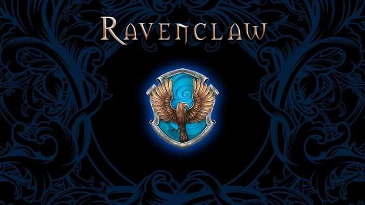
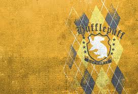
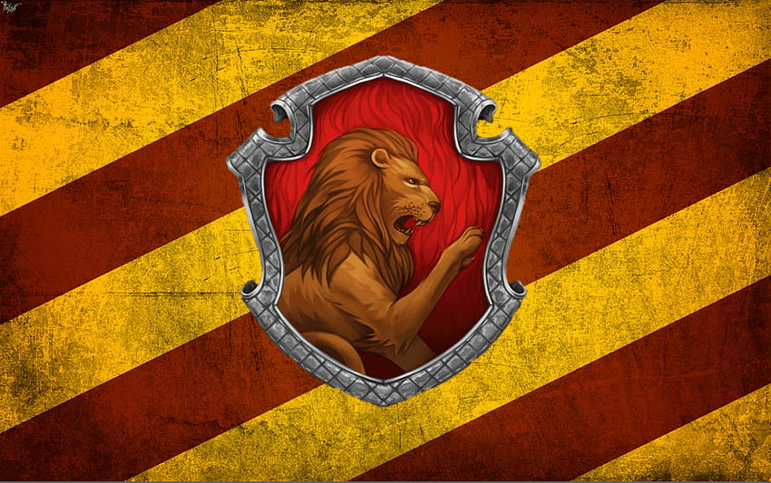
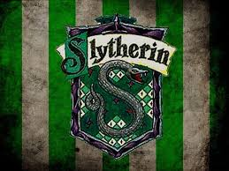

A Magia de Hogwarts
Esta escola de bruxaria, escondida nas montanhas da Escócia, é onde jovens bruxos e bruxas descobrem e aprimoram seus poderes mágicos. Divida por 4 casas, Corvinal, Lufa-Lufa, Grifinória e Sonserina, Hogwarts ensina valores como coragem, amizade e lealdade. O Chapéu Seletor, o Quadribol e aventuras emocionantes tornam a experiência única. Mais do que uma escola, Hogwarts é um lar para os fãs, onde a imaginação se desenrola em um mundo de magia e mistério. Desde seu primeiro encontro com a plataforma 9¾ até a batalha final em Hogwarts, os leitores e espectadores são cativados por sua magia duradoura.

Personagens Memoráveis
Professores icônicos como Dumbledore, sábio e gentil, e Snape, enigmático e complexo, moldam o destino da escola. Hagrid, com sua paixão por criaturas mágicas, é adorado por todos. Dobby, o elfo doméstico, é um símbolo de liberdade e sacrifício.

Corvinal a casa dos Sábios
Conhecida por valorizar a inteligência, a criatividade e a sabedoria. Seu emblema apresenta um corvo e suas cores são azul e prata. Os membros de Corvinal são reconhecidos por seu amor pelo conhecimento e pela busca incessante por respostas. A fundadora da casa, Rowena Ravenclaw, valorizava a mente e a astúcia. Corvinal atrai alunos que são curiosos e perspicazes. Entre os membros notáveis está Luna Lovegood, cuja excentricidade e visão única do mundo a tornam um destaque da série. Corvinal representa a busca constante pelo saber e a apreciação das mentes brilhantes.
Lufa-Lufa a casa dos Leais.
Destaca-se por seus valores de lealdade, amizade e justiça. Seu emblema é o texugo, e suas cores são o amarelo e o preto. Os alunos de Lufa-Lufa são conhecidos por sua simplicidade e sinceridade, valorizando o coração sobre a astúcia. A fundadora da casa, Helga Hufflepuff, preconizava a igualdade e a aceitação de todos. Lufa-Lufa atrai aqueles que possuem um espírito acolhedor e uma ética sólida. Entre seus membros notáveis está Newt Scamander, um magizoologista apaixonado. Lufa-Lufa representa a força da amizade e a importância de ser verdadeiro consigo mesmo.
Grifinória a casa dos Corajosos.
Conhecida por seus valores de coragem, bravura e determinação. Seu emblema apresenta um leão, e suas cores são o vermelho e o dourado. Os membros da Grifinória são notáveis pela sua ousadia e disposição para enfrentar desafios. A fundadora da casa, Godric Gryffindor, valorizava a bravura e a nobreza de caráter. Grifinória atrai os que têm um espírito audacioso e uma forte ética moral. Harry Potter, o protagonista da série, é um grifinório famoso por sua coragem.
Sonserina a casa dos Astutos.
É notória por seus valores de ambição, astúcia e determinação. Seu emblema apresenta uma serpente, e suas cores são o verde e a prata. Os membros de Sonserina são conhecidos por seu desejo de poder e sua capacidade de alcançar seus objetivos a qualquer custo. O fundador da casa, Salazar Slytherin, valorizava o sangue puro e a grandeza bruxa. Sonserina atrai os ambiciosos e calculistas. Entre seus membros notáveis está Severo Snape, cuja complexidade o torna um personagem intrigante. Sonserina representa a busca pelo sucesso e a disposição de fazer o que for preciso para alcançá-lo.
